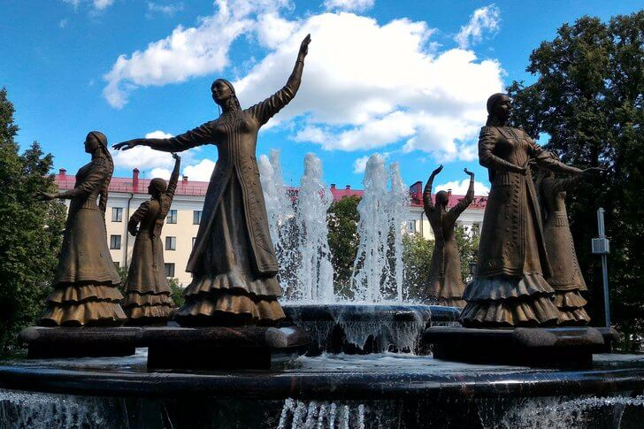

Памятник Салавату ЮлаевуСалават Юлаев – национальный герой Башкирии, боровшийся за независимость своего народа во времена Екатерины II. Монумент в его честь был установлен в 1967 году на реке Белой. Скульптор С. Д. Тавасиев изобразил героя верхом на коне. Вместе с гранитным постаментом высота изваяния составляет 14 метров, вес – 40 тонн. Это самая большая конная скульптура в России. Памятник стоит на самой высокой точке центра Уфы, его хорошо видно издалека. |
|
|  |
Фонтан "Семь девушек"Скульптурная группа из семи девичьих фигур и двух мраморных бассейнов была создана в 2015 году на основе башкирской легенды о семи сестрах, которые предпочли плену гибель в водах озера. Автор проекта Х. Хабибрахманов списывал образы с девушек-участниц народного ансамбля танца. Около фонтана установлен экран, на котором транслируют выступление этого коллектива, а также природные достопримечательности Башкортостана. |
Конгресс-холлСовременное здание 2007 года в стиле хай-тек, разбавленном башкирскими национальными мотивами, которое также называется «Дом дружбы народов». Оно было возведено по заказу республиканского министерства культуры. На его территории размещаются музейный комплекс, конференц-залы, ресторан с блюдами национальной кухни, зимний сад, торговый центр и подземная автостоянка. |